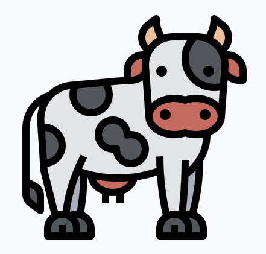

Entregable 2 - Análisis y diagnóstico
Nombre y Apellido: Rodrigo Nicolas Castro
DNI: 34.813.595
Empresa elegida: PowerFlex S.A.
Trabajo Practico: 2
Fecha: 12/05/2023
Docente: Maria Luciana Mudry
Introducción
Powerflex S.A. es una empresa familiar (Operada principalmente por su dueño - Victor Videtta y sus 3 hijos) con sede en C.A.B.A., Argentina que se dedica a la comercialización, importación, y reparación de herramientas eléctricas, accesorios y repuestos del rubro ferreteria y construcción. La empresa se fundó en el año 2011 en con el objetivo de proporcionar productos y servicios de alta calidad a precios accesibles para el mercado argentino. PowerFlex con CUIT número 30711778477 se ubica en calle Murature 4942, C.A.B.A., Buenos Aires, Argentina desde donde ejerce sus tareas administrativas. La empresa también posee un depósito ubicado en el gran buenos aires el cual utiliza para almacenar y despachar los productos que comercializan.
PowerFlex tal como nos describe Patricio Videtta (Gerente de operaciones) es una empresa que fue mutando mucho con el correr de los años, en sus comienzos la empresa se dedicaba a importar y vender cinceles para martillos eléctricos, que importaban desde China y reparación de herramientas eléctricas de un selecto grupo de marcas (Hasta llegaron a ser el service oficial de Bosch en la capital federal). Luego la empresa forjo una alianza comercial con un fabricante alemán y comenzó a importar discos de corte y pulido, lijas, herramientas eléctricas y rodillos.
La empresa continuo creciendo hasta que en Argentina ocurrió el cierre de las importaciones, esto puso a PowerFlex en una situación muy complicada obligándola a reducir su tamaño y eventualmente a suspender sus operaciones por completo
Una vez que el cierre a las importaciones comenzó a flexibilizarse, PowerFlex tomo ventaja de su equipo de trabajo, comprometido y resiliente, y volvió a servir al mercado argentino gracias a una alianza estratégica con la empresa Rawlplug, con quienes tienen un contrato exclusivo de distribución en el país.
La empresa, a mas alla de ser una pyme, cuenta con un equipo altamente capacitado y con amplia experiencia en la industria, (su fundador y Presidente cuenta con más de 50 años de experiencia en el sector) lo que les permite brindar un excelente servicio al cliente y asesoramiento técnico en cuanto a la selección de las herramientas e insumos más adecuadas para cada trabajo.
Powerflex tiene un fuerte compromiso con la satisfacción del cliente y se esfuerza por asegurar que sus productos y servicios cumplan con los más altos estándares de calidad. La empresa se asegura de que sus clientes reciban productos de alta calidad a precios competitivos y que disfruten de una experiencia de compra sin problemas.
Socios estratégicos
Tal como se describió en la sección anterior, PowerFlex cuenta con un socio estratégico, la empresa polaca Rawlplug, quienes ofrecen a Poweflex la exclusiva distribución de sus productos en Argentina.
La alianza entre PowerFlex y Rawlplug surge de varios aceramientos previos, en las epocas en que PowerFlex distribuia productos en Argentina para una empresa Alemana, dado el excelente trabajo de PowerFlex, los representantes de Rawlplug fueron quienes se acercaron a la empresa para formar esta alianza.
Rawlplug, con más de 100 años de existencia, fabrica y exportá herramientas y accesorios para la construcción desde Wroclaw, Polonia. Ofrecen productos de alta calidad a precios muy competitivos y por eso fue la elección de PowerFlex como proveedor oficial.
Rawlplug es una empresa reconocida a nivel mundial (Aunque no tanto en Argentina) por sus productos de alta calidad en el mercado de la construcción, lo que les ha permitido obtener certificaciones internacionales de calidad y seguridad en sus productos. La alianza entre PowerFlex y Rawlplug les permite a ambas empresas expandir sus mercados y ofrecer soluciones completas a sus clientes. Rawlplug ofrece sus productos de alta calidad a través de la red de distribución de PowerFlex en Buenos Aires, mientras que PowerFlex aprovecha la experiencia y excelente calidad de Rawlplug en la fabricación de herramientas y accesorios.
La asociación entre PowerFlex y Rawlplug es una combinación estratégica que beneficia a ambas empresas y les permite ofrecer una amplia gama de productos de alta calidad a precios competitivos a sus clientes en Argentina.
Organigrama de la empresa
A continuación se puede observar el organigrama de PowerFlex S.A. segun la descripción provista por el referente de la empresa, al momento de la practica y dadas las corrientes limitaciones a las importaciones, la empresa esta en un proceso de restructuración.

Organigrama flexible
Si bien PowerFlex cuenta con un organigrama formal, muchas veces las líneas de este se desdibujan. Patricio nos cuenta que en numerosas ocasiones es necesario ser flexible y colaborar en al área de la empresa donde más sea necesario, por ejemplo, descargando un pedido de materiales o acompañando a los vendedores. En PowerFlex todos tienen la cultura colaborativa bien arraigada.

Misión
Nuestra empresa se dedica a ofrecer herramientas eléctricas e insumos de alta calidad y soluciones técnicas innovadoras para profesionales y aficionados al sector de la construcción. Nuestro compromiso es satisfacer las necesidades de nuestros clientes mediante una alta calidad de servicio y atención personalizada.

Visión
Queremos ser reconocidos como una empresa líder en la comercialización de herramientas eléctricas para la construcción en Argentina. Nos esforzamos por ser una empresa innovadora y comprometida, que ofrece soluciones técnicas eficientes y de alta calidad a nuestros clientes.
Valores
- Calidad: Nos comprometemos a ofrecer productos y servicios de alta calidad a nuestros clientes, cumpliendo con los más altos estándares de la industria.
- Satisfacción del cliente: Colocamos al cliente en el centro de nuestro negocio y trabajamos para satisfacer sus necesidades y expectativas en todo momento.
- Trabajo en equipo: Fomentamos el trabajo en equipo y la colaboración entre nuestros empleados para alcanzar nuestros objetivos de manera eficiente y efectiva.
- Honestidad y transparencia: Mantenemos una cultura empresarial basada en la honestidad, la transparencia y la ética en todas nuestras actividades y relaciones comerciales.
Estrategías actuales
PowerFlex al momento no cuenta con una estrategia formalmente definida. Se encuentra en una modalidad "luchar para poder seguir viviendo". En PowerFlex se trabaja de manera operativa y con horizontes temporales muy cortos, poniendo el foco en resolver problemas inmediatos.
La empresa no carece de capacidades para planear al largo plazo, dado que sus líderes están altamente capacitados y dotados de gran experiencia. Pero según me cuentan sus referentes, dada la situación económica actual y las limitaciones a las importaciones (el talón de Aquiles de la empresa) planear a largo plazo es un lujo que PowerFlex no puede darse en este momento.
Más allá de no estar explícitamente descrito ni transmitido a los empleados de la organización PowerFlex considera y se mueve en las líneas de la estrategia genérica de Porter de liderazgo en costos, reduciendo los costos en todas las áreas de la empresa, desde distribución hasta la administración. Al ofrecer precios más competitivos, atrae a clientes que buscan productos de calidad a precios económicos y dan a conocer su marca de bandera Rawlplug.
Mi recomendación a la empresa en cuanto a la estrategia sería considerar fabricantes locales, para mitigar parcialmente los efectos gubernamentales sobre las importaciones y al mismo tiempo perseguir una estrategia de penetración de mercado y vender más a sus clientes existentes, en lugar de buscar nuevos clientes.
Ante estos comentarios, Patricio, Gerente de operaciones de PowerFlex, me informa que el factor por el cual no se ha considerado a productores locales hasta el momento, es la diferencia de calidad de los productos de Rawlplug, contra los de fabricación local, aunque es una opción que no se descarta en el futuro.
PowerFlex cuenta con un gran activo intangible que es la experiencia y contactos de su presidente Víctor, su voz es una autoridad en la industria. Los clientes confían mucho en él y podría recomendar otros productos que comercializaran en el futuro a sus actuales clientes, quienes dado los años de relación no dudarían en confiar en PowerFLex. También podrían explotar el expertise técnico de Patricio aumentando promoción y publicidad de sus productos al crear una página web que le dé presencia online a la empresa.

Cartera de productos

PowerFlex, compartio conmigo la actual lista de precios de la totalidad de los productos que comercializa, la cual se puede observar a continuación.
Estrategías de Marketing Mix
Consideraciones importantes
Actualmente las regulaciones en Argentina limitan a las pymes a importar no mas de USD $50.000 (cincuenta mil dolares) anuales en mercaderia o insumos.
PowerFlex se encuentra en una situación en la cual no puede ofrecer suficientes productos al mercado para satisfacer la demanda dada la restriccion anteriormente mencionada.
El modelo que utiliza PowerFlex en la actualidad consiste en tomar pedidos de sus clientes, quienes pagan por adelantado una gran parte del mismo. Con estos fondos la empresa realiza el pedido a Rawlplug, y con las ganancias del mismo cubre los costos de importación, aduanas e impuestos de otros productos para vender en el mercado local. Con esta información quiero ilustrar, que lo que se importa se encuentra prevendido y sobre estos pedidos PowerFlex pide una cantidad superior de producto para tener en stock.
Productos:
Utilizamos la matriz BCG para el análisis estratégico, evaluando la cartera de productos para clasificar los mismos en función de su participación de mercado y su tasa de crecimiento.
Estrellas: Las resinas KER son actualmente el producto estrella de PoweFlex, todas las cantidades que se exportan se venden instantaneamente, y al ser una nueva resina hibrida su crecimiento en el mercado es alto. La performance y resistencia de este tipo de resinas es muy superior a las convencionales. PowerFlex planea invertir en este tipo de resinas para aumentar su posicion en el mercado y eventualmente considera producirlas en el pais.
Incógnitas o preguntas: Los discos de corte son sin dudas el producto interrogante para PoweFlex, poseen una muy baja participación en el mercado, y una tasa de crecimiento del mismo muy alta al utilizarse no solo para la construcción sino tambien discos de corte para hobies y modelismo.
Vacas lecheras: Los accesorios para aplicacion de resinas y siliconas son el producto Vaca para PoweFlex, tienen una alta participación en el mercado, pero al haber muchisima oferta, ser un producto de facil producción y no ser un producto de un solo uso (una misma pistola aplicadora puede durar decadas hasta que uno opte por cambiarla), no hay mucho crecimiento en el mercado.
Perros: Las fijaciones mecanicas son el producto perro para PoweFlex, se vende muy poco, no hay casi demanda para este producto y la tasa de crecimiento del mercado para estos productos es casi nula.
|
Estrella |

Interrogante |
|---|---|
|

Vaca |
Perro |
Precios:
PowerFlex utiliza una estrategia de fijación de precios basados en sus costes, y sus principales competidores. El mecanismo que utilizan es midiendo sus costos contra el precio de la competencia, intentan fijar sus precios un 5% más bajos que los mismos productos de la categoría. PowerFlex, apunta a en promedio tener una ganancia por producto media del 18%.
La demanda los bienes ofrecidos por PowerFlex es elástica, La empresa debe tiene en cuenta el valor percibido por el cliente al establecer el precio de sus productos. Saben que los clientes están dispuestos a pagar más por las resinas híbridas dado que no abundan en el mercado.
PowerFlex mensualmente aumenta sus precios entre un 7% y un 8% para mitigar los efectos inflacionarios.
Comunicación:
La comunicación en este momento es casi nula de parte de PowerFlex.Varias veces quisieron mejorar su presencia y tener un sitio web propio, pero dada la inestabilidad económica del país y los múltiples cambios por los que pasaron en estos últimos periodos, estas acciones nunca se llevaron a cabo. Al momento la lista de precios es el único elemento que utiliza PowerFlex para enviar a sus actuales clientes. La empresa no tiene intenciones en el corto plazo de realizar campañas de comunicación de ningún tipo. Tampoco posee cuentas en redes sociales.
Plaza:
PowerFlex comercializa en la Ciudad Autónoma de Buenos Aires y Mar del Plata, posee un solo punto de venta propios y todos sus clientes son ferreterías.
La empresa a través de su vendedor coordina y los compradores retiran los productos comprados en el punto de venta y a veces hasta mismo en la aduana.
En el pasado PowerFlex contaba con distribución propia y un camión con el que hacer repartos, pero no es la realidad de este delicado momento para la empresa.
Analisis del Macroentorno
Utilizamos el modelo PESTEL para analizar el entorno macroeconómico de la industria.
| Variable | Descripcion |
|---|---|
Política  |
La inestabilidad política y económica de Argentina en los últimos años ha generado incertidumbre en el sector y ha afectado el crecimiento y desarrollo de la industria ferretera. Además, las políticas comerciales y las regulaciones gubernamentales tienen un impacto significativo en la importación de materias primas y productos terminados. También existe un riesgo político en términos de estabilidad económica y cambios en la política gubernamental. Siendo este un año de elecciónes, se espera mayor inestabilidad política que impactara al sector. |
| Económica
|
La economía Argentina ha experimentado una alta inflación, devaluación de la moneda y fluctuaciones en el tipo de cambio significativas, lo que genera aumentos en los costos de producción e importaciones y afecta la capacidad de la empresa para competir en el mercado. Los elevados y complejos impuestos, generan aumentos en los costos de comercialización y afecta la rentabilidad de las empresas. La demanda de herramientas eléctricas para la construcción también podría verse afectada por las fluctuaciones en el sector de la construcción. La economía argentina está altamente influenciada por la fluctuación de los precios de las materias primas, lo que afecta a la cadena de suministro de la industria ferretera. |
Social
 |
La demanda de herramientas eléctricas para la construcción está influenciada por la demanda de construcción de viviendas y edificios, así como por la demanda de proyectos de construcción a gran escala. Las empresas deberá estar al tanto de las tendencias sociales y de los cambios en el mercado de la construcción. El envejecimiento de la población argentina puede influir en la demanda de productos específicos para las necesidades de este grupo demográfico. |
Tecnológica  |
La tecnología está cambiando rápidamente en la industria de las herramientas eléctricas y accesorios para la construcción, y las empresa deberán estar actualizadas en cuanto a las últimas tendencias en tecnología y en los nuevos productos lanzados por los competidores. El uso de la tecnología ha mejorado los procesos de producción y distribución de productos ferreteros, lo que ha permitido a las empresas aumentar su eficiencia y reducir costos. La creciente popularidad de las compras en línea ha impulsado a las empresas a adoptar estrategias de comercio electrónico para atender las necesidades de los consumidores que prefieren comprar productos en línea. . |
| Ambiental |
La industria ferretera tiene un impacto significativo en el medio ambiente debido al uso de materiales y productos químicos tóxicos. Las empresas deben tomar medidas para minimizar su impacto ambiental y cumplir con las regulaciones locales y nacionales. El aumento de la conciencia ambiental de los consumidores ha impulsado a las empresas a desarrollar productos más sostenibles y respetuosos con el medio ambiente. Los consumidores son cada vez mas conscientes del impacto ambiental y estan dispuestos a pagar un poco mas por productos que sean eco-friendly. |
| Legal |
Los factores legales que pueden afectar a esta industria en Argentina incluyen una serie de regulaciones y leyes que afectan a las empresas del sector. Algunos de estos factores incluyen: Regulaciones laborales: Las empresas de la industria deben cumplir con las regulaciones laborales establecidas por el gobierno Argentino para garantizar la seguridad y la salud de los trabajadores. Esto incluye proporcionar un ambiente de trabajo seguro, asegurar que los trabajadores tengan contratos y salarios justos, y cumplir con las leyes laborales vigentes en el país. Regulaciones de importación y exportación: Las empresas que operan en la industria importando articulos estan sujetas a regulaciones de importación y exportación. Esto incluye aranceles a la importación de materiales y productos. Regulaciones de medio ambiente: como notamos en la seccion ambiental de este analisis, las empresas de este rubro tienen un impacto significativo en el ambiente, estas deben cumplir con las regulaciones ambientales vigentes en el país para minimizar su impacto y evitar posibles sanciones y multas. Regulaciones de competencia: Se debe cumplir con las regulaciones de competencia establecidas por el gobierno Argentino para evitar prácticas comerciales injustas y fomentar la competencia leal en el mercado. |
Fuentes de información:
Analisis del Microentorno
Demanda
La demanda de productos de ferreteria similares a los que ofrece PowerFlex depende principalmente de la actividad de la construcción y las necesidades de mantenimiento y reparación de edificios e infraestructuras existentes. En Argentina, la construcción ha tenido altibajos en los últimos años debido a la situación económica del país, lo que ha afectado la demanda de la industria ferretera. Sin embargo, la necesidad de reparación y mantenimiento de edificios e infraestructuras sigue siendo una constante en el mercado.
¿Quiénes conforman la demanda del sector?
Identificamos como demanda geográfica y en base al producto para PowerFlex, empresas del rubro ferreteria ubicadas en la provincia de Buenos Aires.
Tamaño del mercado y proyección:
Según un informe del Observatorio de la Industria de la Construcción (OIC) de Argentina, en 2020 el mercado ferretero argentino tuvo una facturación total de alrededor de 16.500 millones de dólares estadounidenses, lo que representa un aumento del 17% en comparación con el año anterior. Además, se estima que el mercado ferretero argentino cuenta con alrededor de 17.000 establecimientos, entre ferreterías, corralones de materiales y tiendas especializadas, que emplean a más de 100.000 personas. En cuanto al estado actual de la industria procedo a citar los comentarios de Hugo Saidón para el sitio web del cronista "La industria viene sufriendo bajas en el volumen de la comercialización de productos destinados tanto al consumo particular y hogareño como el industrial, destaca Hugo Saidón, de la Cámara de Ferreterías y Afines de la República Argentina (CAFARA). El especialista señala que en el primer caso el descenso interanual ronda el 20%, mientras que en el segundo la contracción registrada de un año a otro se acerca al 15%." Fuente - Sitio web cronista.com - El sector ferretero crece de la mano del 'e-commerce' - https://www.cronista.com/apertura/empresas/El-sector-ferretero-crece-de-la-mano-del-e-commerce-20190816-0004.html
Características de la demanda Consumidor Final:
Características de la demanda BtoB:
Oferta
En el mercado ferretero de Argentina, existe una amplia oferta de productos que abarca desde herramientas manuales hasta maquinarias eléctricas, materiales de construcción y accesorios para el hogar. Las tiendas de ferretería ofrecen productos tanto para uso profesional como para el hogar, y se pueden encontrar desde pequeñas tiendas de barrio hasta grandes cadenas especializadas.
La oferta en el mercado argentino se compone de 62% de ferreterias barriales y un 26% de ferreterias industriales. De estas el 76% cuenta con hasta 5 empleados.
El mercado argentino de anclajes y accesorios para ferreterías cuenta con una limitada oferta de proveedores y distribuidores. Existen algunas empresas que se destacan por su experiencia, conocimiento técnico, calidad de productos y precios competitivos (como lo son Tyrolit, 3M, y Fischer).
La oferta de productos en este mercado es muy variada y abarca desde anclajes quimicos, discos de corte, accesorios de fijación y hasta resinas. Existe en el rubro una creciente oferta de accesorios de bajo precio para trabajos de construcción aunque cabe destacar que su calidad es media/baja.
Las principales barreras para la venta en el canal son la competencia en precio y calidad de producto. La mayor exigencia del consumidor, junto con la limitada cantidad de productos y constantes subas del dolar, generan preocupación entre quienes comercializan en este sector.
Las principales tendencias que se observan en el sector respecto a la oferta son el aumento de prescencia online por parte de las empresas del rubro y el aumento de ventas a traves de ecommerce de este tipo de productos.
En cuanto a los oferentes del mercado se puede observar que se trata de grandes empresas, con operaciones a nivel mundial y en el caso de una de ellas con producción local (Tyrolit) y empresas como PowerFlex que no realizan ningun proceso productivo y solo comercializan y representan a Rawlplug en el país.
Fuentes de información:
Ciclo de vida del sector
La industria de anclajes y resinas para la construcción y ferretería se encuentra en una fase de madurez del ciclo de vida. Esto se debe a que el mercado está bien establecido, con una amplia oferta de productos y una competencia consolidada entre los principales actores del mercado. Además, la demanda de herramientas y accesorios de construcción en Argentina es relativamente estable, lo que indica una saturación del mercado y una limitada oportunidad de crecimiento en el corto plazo.
Aunque existen nuevas tecnologías y materiales que pueden tener un impacto en el mercado, la introducción de estos productos no se espera que cambie significativamente la estructura del mercado en el corto plazo. En general, se espera que el sector ferretero argentino continúe operando en una fase de madurez, con una oferta y demanda estables, una competencia consolidada y una presión en los precios de los productos.Es un sector (en base a anclajes y resinas) no es muy competitivo, a pesar de contar con jugadores importantes en el mercado, lo que hace que el ingreso de nuevos competidores sea difícil. Además, la industria ha estado en el mercado por un tiempo, lo que significa que es menos probable que haya cambios significativos en el futuro cercano.
Ciclo de vida de la empresa
A pesar de tener mas de 10 años como empresa, PowerFlex se encuentra en la estapa crecimiento del ciclo de vida, esto se debe a los multiples embates de la realidad politica y economica argentina. La empresa no cuenta con inversiones en publicidad, ni comunicación y se le recomineda expandir su línea de productos buscando fabricantes locales, fortalecer la marca dandose a conocer en exposiciones de la industria (como la expo ferretera que se celebra anualmente en buenos aires) y aumentar su precencia online (o mejor dicho crear una).
Graficos ciclo de vida - Industria Ferretera
Graficos ciclo de vida - PowerFlex
5 Fuerzas de Porter
Las 5 fuerzas de Porter se utilizan en este caso para analizar el entorno competitivo en el que se encuentra PowerFlex. Este análisis permite identificar las principales amenazas y oportunidades que enfrenta la empresa en su mercado y desarrollar estrategias adecuadas para competir eficazmente.
1. Poder de los clientes: Los clientes de la empresa son las ferreterías, y probablemente no tengan mucho poder de negociación ya que los productos son de muy alta calidad y escenciales para la construcción. PowerFlex es de los proveedores en el mercado de algunos de estos productos (como las resinas hibridas). Este tipo de productos son muy específicos y técnicos, por lo que requieren conocimientos especializados y experiencia para su uso adecuado. Sin embargo, si los precios de la empresa son significativamente más altos que los de sus competidores, los clientes podrían intentar negociar mejores precios o buscar alternativas.
2. Amenaza de nuevos competidores: Dado que PowerFlex importa sus productos desde un proveedor en el extranjero, es posible que en el futuro si el panorama importador en Argentina mejora, surjan nuevas empresas importadoras que ofrezcan productos similares, lo que podría aumentar la competencia en el mercado. Sin embargo por el momento la amenaza es baja, el hecho de que PowerFlex ya tenga un proveedor establecido con distribución exclusiva de la marca, un cupo asignado de importaciones y relaciones comerciales sólidas podría hacer más difícil la entrada de nuevos competidores.
3. Poder de los proveedores: PowerFlex cuenta con un único proveedor (Rawlplug) para importar sus productos, lo que significa que tiene una fuerte dependencia de él y puede estar expuesto a posibles fluctuaciones de precios, terminos y medios de pago, y disponibilidad de los productos. Si el proveedor decidiera aumentar los precios, PowerFlex tendría pocas opciones para obtener los productos que necesita. Es de maxima importancia que la empresa tenga una buena relación con Rawlplug y al mismo tiempo explore establecer relaciones comerciales con otros proveedores para disminuir su dependencia.
4. Amenaza de productos sustitutos: Los anclajes y resinas para la construcción y ferretería son productos esenciales y no hay muchos sustitutos directos para ellos. Es poco probable que esta fuerza represente una gran amenaza para la empresa.
5. Rivalidad competitiva: Como se mencionó anteriormente, no hay muchos proveedores de anclajes y resinas para la construcción y ferretería en el mercado, por lo que la intensidad de la rivalidad entre competidores es baja. En este caso, PowerFlex se encuentra en una situación favorable ya que no existe una gran cantidad de empresas en el mercado que ofrezcan los mismos productos que ellos.
A Monitorear
PowerFlex deberá monitorear principalmente el poder de sus proveedores, asegurando una buena relación comercial con Rawlplug y explorando la posibilidad de establecer relaciones comerciales con otros proveedores para disminuir su dependencia. También deberá estar atento a posibles cambios en el mercado importador de Argentina que podrían aumentar la amenaza de nuevos competidores. La empresa deberá mantener una oferta de productos de alta calidad y precios competitivos para mantener su posición en el mercado. Además, la empresa deberá estar preparada para enfrentar cualquier intento de negociación por parte de los clientes y estar en constante actualización sobre las necesidades y requerimientos de estos para mejorar su relación comercial y satisfacer sus necesidades.
Competencia
Tiene competidores directos en el mercado, empresas locales e internacionales que ofrecen productos similares, ellos son:

Matriz de posición competitiva
Utilizamos la matriz de posición competitiva, para evaluar la posición de PowerFlex en relación con sus competidores en el mercado.
- Agentes de cambio:
Tyrolit, empresa de origen Australiano, que cuenta con dos plantas productoras se encuentra en rápido crecimiento en el mercado, el hecho de tener abastecimiento local es un factor que potencia sus ventas en tiempo de limites a las importaciones.
- Empresas de nicho:
PowerFlex dada su alta especialización en resinas y su representación exclusiva de Rawlplug en Argentina es un referente en cuanto a los productos de la marca. Cabe destacar que del catalogo de productos importados por PoweFlex, las resinas representan un 80% de su cartera.
- Empresas líderes:
Fischer y 3M dominan el mercado y son las marcas mas reconocidas en cuanto a fijaciones quimicas. Aunque en el caso de 3M se ha decidido limitar el modelo de negocio en Argentina especialmente en la linea de "Healthcare" lo cual si bien incierto, podria indicar que en el futuro 3M decida reducir su presencia en este sector tambien.
- Empresas establecidas:
3M y Wendt entran en esta categoria. Ambas empresas estan consolidadas, y ambas dos dependen altamente de las importaciones (en especial Wendt, importando desde Alemania todos sus productos). Estas empresas tienen altos riesgos en caso de no poder adaptarse al contexto economico y politico Argentino.
Fuentes de información y para la matriz:
Factores Clave de Éxito
Los factores clave de éxito en la industria ferretera en el sector de anclajes y resinas para la construcción en Argentina incluyen sobre todo la calidad de los productos, la eficiencia en el suministro y la capacidad de adaptarse a los cambios en la demanda del mercado.
PowerFlex opera en un mercado y momento complejo con varios competidores importantes. La empresa depende de un solo proveedor, lo que podría ser un riesgo para la empresa en caso de problemas de suministro o calidad. La demanda de la industria depende de la actividad de la construcción y las necesidades de reparación y mantenimiento de edificios e infraestructuras existentes.
PowerFlex deberá asegurarse de mantener un flujo constante de productos y explorar opciones para diversificar sus proveedores para reducir los riesgos asociados con su dependencia de Rawlplug. Además, la empresa deberá estar atenta a los cambios en las politicas de importaciones y factores cambiarios para mantener su posición en el mercado.
Análisis FODA
 Debilidades
Debilidades
|
 Fortalezas
Fortalezas
|
|---|---|
|
Oportunidades
|
 Amenazas
Amenazas
|
Diagnóstico
PowerFlex se dedica a la comercialización de productos y accesorios para la construcción y ferretería. En los últimos años, ha experimentado complicaciones y disminuciónes en sus ventas debido a las limitaciones a la importación. La falta de innovación en sus estrategias comerciales y busqueda de proveedores ha puesto a la empresa en una situacion muy vulnerable.
En términos de su posición en el mercado, PowerFlex no tiene una presencia sólida en su mercado, y dada su nula comunicación y demas factores expuestos la situación no tiene animos de cambiar. Su marca insignia Rawlplug sigue siendo reconocida y respetada, pero no ha logrado mantenerse al día con las demandas de los consumidores.
En cuanto a sus operaciones, la empresa tiene una cadena de suministro deficiente, su modelo de negocio ha demostrado ser rígido y no ha permitido la agilidad necesaria para adaptarse a los cambios en el mercado y buscar proveedores locales.
En resumen, PowerFlex se enfrenta a desafíos importantes en cuanto a la cadena de suministros y la gestión de sus costos de importación (atados a la volatilidad del dolar). La empresa debe considerar formas de ser más ágil en su modelo de negocio para adaptarse rápidamente a los cambios en el mercado y sus normativas.
Consciente a la situación en la que se encuentra PowerFlex tiene un presupuesto de ARS $200.000 destinado a acciones de marketing para el ejercicio 2023.
En el video a continuación veremos una breve cobertura del diagnóstico realizado para PoweFlex...